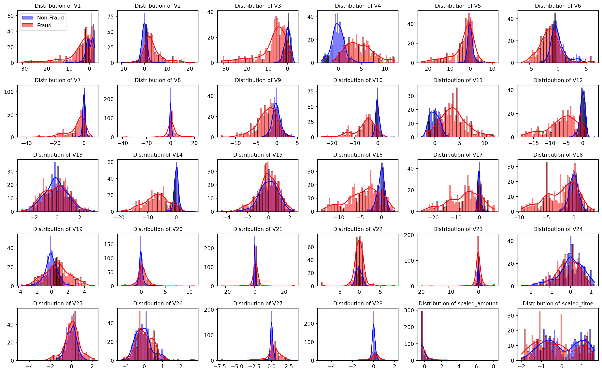
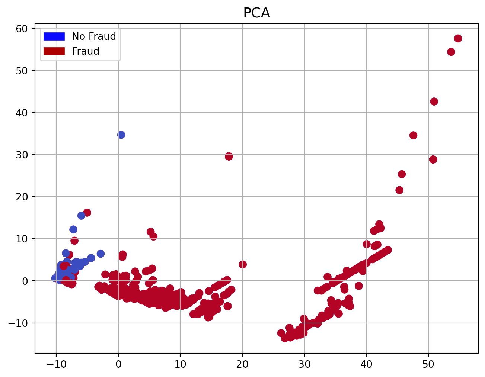
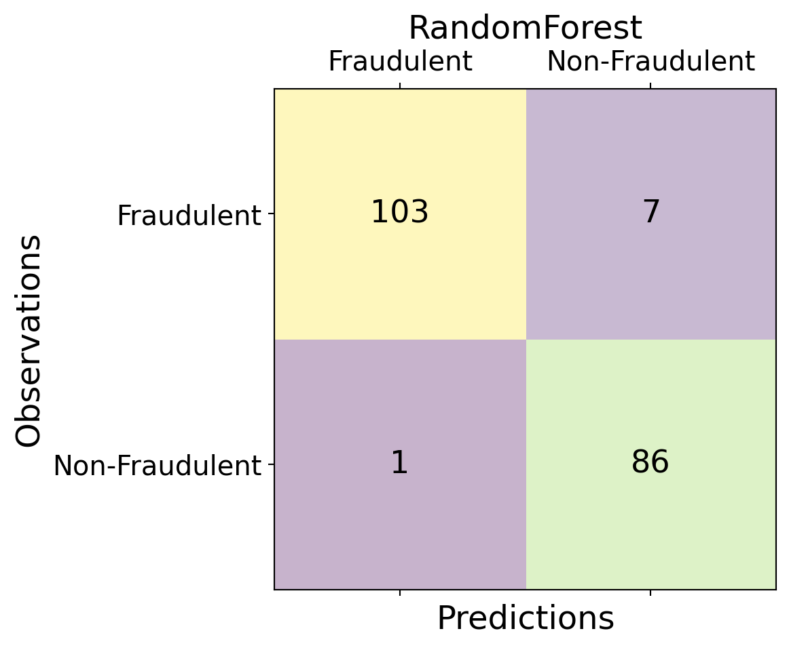
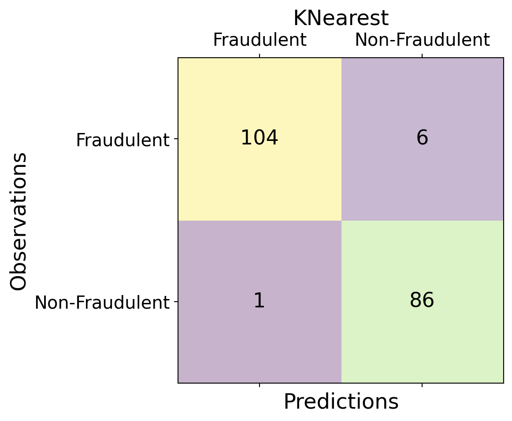
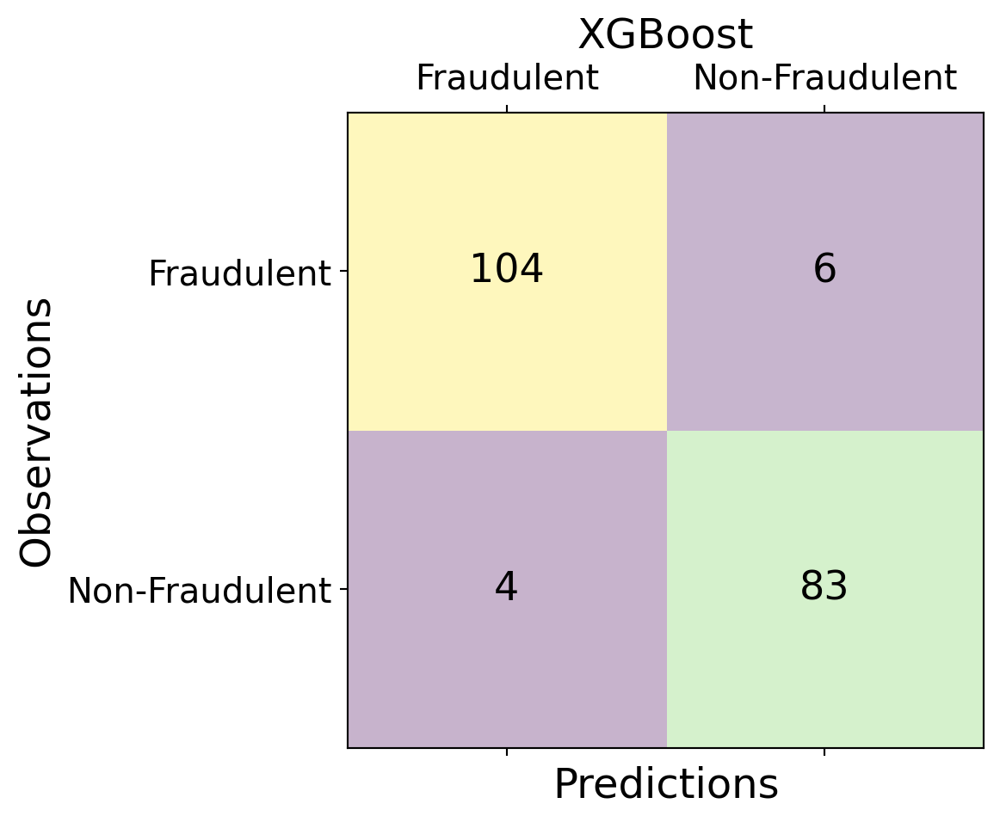
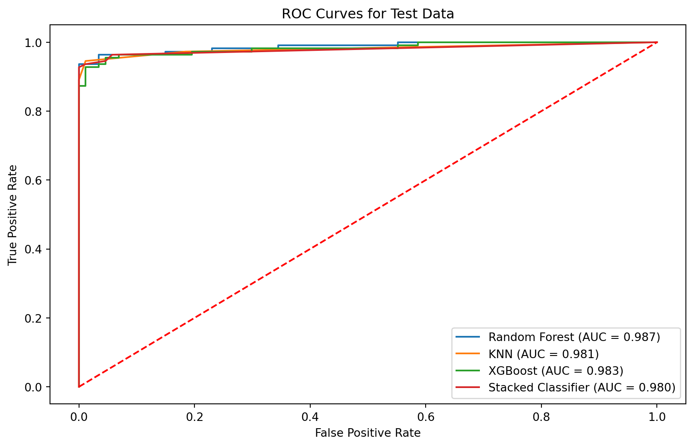
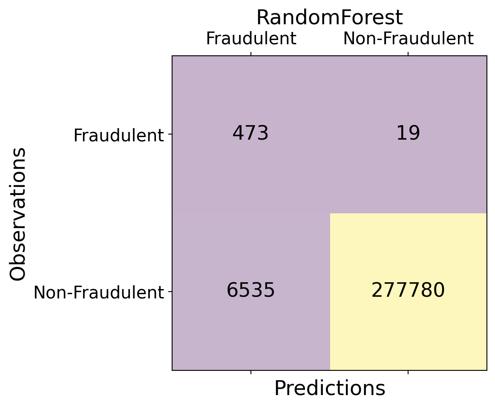
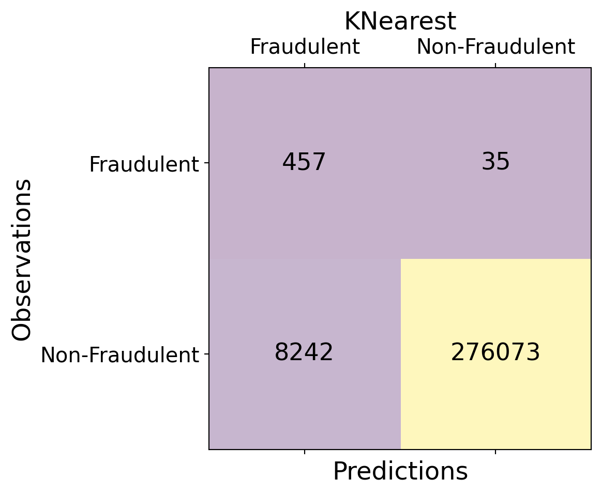
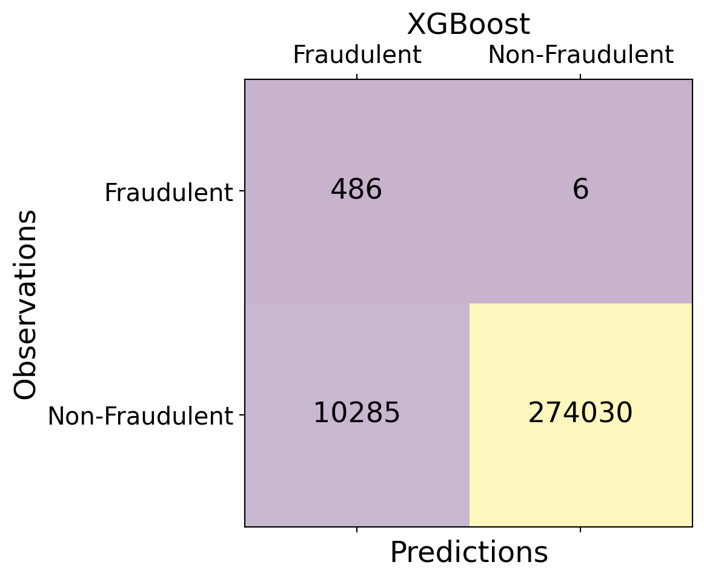
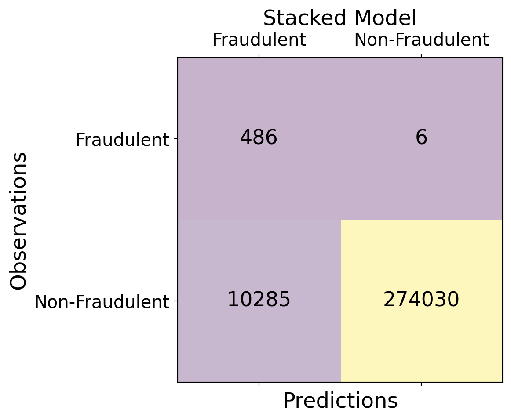

Fraud Detection Using Ensemble Learning
Team : Mining Minds -INFO 523- Spring 2023 - Project Final
Introduction
The primary goal of our project is to enhance machine learning models accuracy in detecting fraudulent credit card transactions using an ensemble learning technique known as stacked generalization.
The motivation behind our project is to improve the detection of fraudulent transactions, which remains a significant challenge in financial security.
By integrating multiple predictive models, the project aims to create a robust system that can more accurately identify fraudulent transactions, thus contributing to safer financial environments.
Despite challenges like data imbalance and feature anonymization, we anticipate that stacked generalization will enhance fraud detection accuracy, demonstrating the effectiveness of ensemble methods in complex scenarios.
Dataset description
The dataset comprises over 550,000 credit card transactions from European cardholders, collected in 2023.
It includes 31 features with transaction details such as amount and time, anonymized to ensure privacy and ethical compliance.
The anonymization of features presents challenges in interpreting the data, while the class imbalance poses difficulties in model training and accuracy.
Preview of the Dataset: First Few Transactions
::: {#cell-Reading the dataset .cell execution_count=3}
| Time | V1 | V2 | V3 | V4 | V5 | V6 | V7 | V8 | V9 | ... | V21 | V22 | V23 | V24 | V25 | V26 | V27 | V28 | Amount | Class | |
|---|---|---|---|---|---|---|---|---|---|---|---|---|---|---|---|---|---|---|---|---|---|
| 0 | 0.0 | -1.359807 | -0.072781 | 2.536347 | 1.378155 | -0.338321 | 0.462388 | 0.239599 | 0.098698 | 0.363787 | ... | -0.018307 | 0.277838 | -0.110474 | 0.066928 | 0.128539 | -0.189115 | 0.133558 | -0.021053 | 149.62 | 0 |
| 1 | 0.0 | 1.191857 | 0.266151 | 0.166480 | 0.448154 | 0.060018 | -0.082361 | -0.078803 | 0.085102 | -0.255425 | ... | -0.225775 | -0.638672 | 0.101288 | -0.339846 | 0.167170 | 0.125895 | -0.008983 | 0.014724 | 2.69 | 0 |
| 2 | 1.0 | -1.358354 | -1.340163 | 1.773209 | 0.379780 | -0.503198 | 1.800499 | 0.791461 | 0.247676 | -1.514654 | ... | 0.247998 | 0.771679 | 0.909412 | -0.689281 | -0.327642 | -0.139097 | -0.055353 | -0.059752 | 378.66 | 0 |
| 3 | 1.0 | -0.966272 | -0.185226 | 1.792993 | -0.863291 | -0.010309 | 1.247203 | 0.237609 | 0.377436 | -1.387024 | ... | -0.108300 | 0.005274 | -0.190321 | -1.175575 | 0.647376 | -0.221929 | 0.062723 | 0.061458 | 123.50 | 0 |
| 4 | 2.0 | -1.158233 | 0.877737 | 1.548718 | 0.403034 | -0.407193 | 0.095921 | 0.592941 | -0.270533 | 0.817739 | ... | -0.009431 | 0.798278 | -0.137458 | 0.141267 | -0.206010 | 0.502292 | 0.219422 | 0.215153 | 69.99 | 0 |
5 rows × 31 columns
:::
Exploratory Data Analysis


Research Questions
What is the comparative performance of anomaly detection algorithms, including Random Forest, XGBoost, KNN, for fraud detection in this specific dataset?
How does the stacked generalization technique, implemented with the mlxtend library, improve fraud detection performance by leveraging the synergy between base classifiers?
Question1: Analysis Plan
Model Training and Sampling Techniques: Address dataset imbalance by oversampling the minority class and undersampling the majority. Split the data into training and testing sets, and train anomaly detection models including Random Forest, XGBoost, and KNN.
Model Optimization: Hypertune the models to optimize performance, ensuring the best possible settings for each algorithm.
Performance Evaluation and Analysis: Evaluate each model on the testing set using metrics like precision, recall, F1-score, and ROC area. Analyze performance differences to understand the impact of model complexity, feature importance, and dataset characteristics.
Question2: Analysis Plan
Stacked Generalization Setup: Utilize the mlxtend library to implement stacked generalization. Train base models as specified, and split their output into training and testing sets for the meta-classifier.
Meta-classifier Training: Combine predictions from base classifiers using the stacking method, and train a meta-classifier on these combined predictions to enhance prediction accuracy.
Evaluation and Analysis: Assess the performance of the stacked model, compare it to the base models, and analyze the performance gains, focusing on factors like model diversity, ensemble principles, and dataset specifics.
Random Undersampling
Classification Models



Metrics for Classification Models
| Metric | RF | KNN | XGBoost | Stacked |
|---|---|---|---|---|
| Accuracy | 0.98 | 0.98 | 0.97 | 0.97 |
| Precision | 0.08 | 0.08 | 0.05 | 0.05 |
| Recall | 0.96 | 0.91 | 0.99 | 0.99 |
| F1-Score | 0.14 | 0.14 | 0.09 | 0.09 |
- Overall, Random Forest demonstrates a slight edge, where all other models exhibit commendable performance in this classification task, underscoring their effectiveness in predictive modeling.
ROC

- Excellent Performance: The ROC curves for four classifiers—Random Forest, K-Nearest Neighbors (KNN), XGBoost, and a Stacked Classifier—indicate high performance, with AUC values all above 0.98. Random Forest and XGBoost display the best performance, both achieving an AUC of 0.989, demonstrating their high effectiveness in discriminating between classes. The Stacked Classifier, despite combining features of multiple models, performs slightly lower than the top individual models with an AUC of 0.98. This suggests that while all models are highly capable, Random Forest and XGBoost might be preferred due to their marginally superior performance.
Evaluation using the Whole Dataset




Metrics for Evaluation using whole dataset
| Metric | RF | KNN | XGBoost | Stacked |
|---|---|---|---|---|
| Accuracy | 0.98 | 0.98 | 0.97 | 0.97 |
| Precision | 0.08 | 0.08 | 0.05 | 0.05 |
| Recall | 0.96 | 0.91 | 0.99 | 0.99 |
| F1-Score | 0.14 | 0.14 | 0.09 | 0.09 |
- Precision is notably low for all classifiers, ranging from 0.05 to 0.08. Precision measures the proportion of positive identifications that were actually correct. These low scores suggest that while the models are good at finding positive cases (fraudulent transactions, for example), a large proportion of these predictions are false positives.
Future Implications
SMOTE stands for Synthetic Minority Over-sampling Technique, a statistical technique designed to balance your dataset by increasing the number of cases. Instead of merely duplicating examples, SMOTE generates synthetic samples from the minority class—the class with fewer instances. This approach effectively addresses the overfitting issue that arises when examples from the minority class are simply replicated.
using a more diverse set of machine learning models combined with a more sophisticated meta-learner can lead to more accurate results.